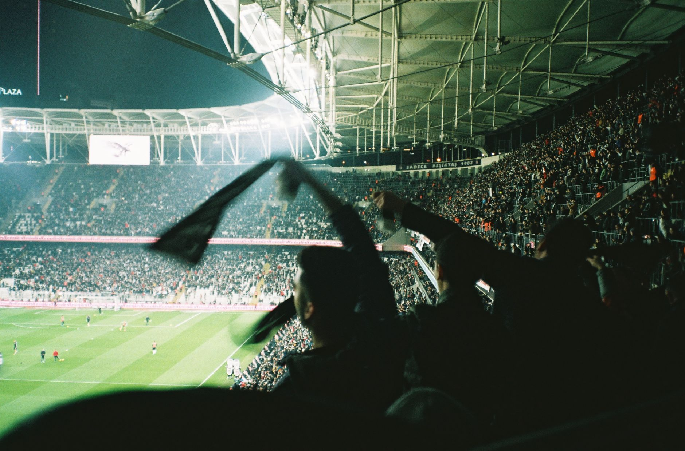

What makes an esports game worth watching
A great esports game is more than a popular title. It should reward skill, create meaningful decisions, and produce matches where the result can change quickly. Clear objectives, recognizable teams, and reliable tournament coverage also make it easier for new viewers to understand what is happening.
Look for a game with an active competitive scene and a regular schedule. Major events give fans memorable moments, while weekly leagues help you follow teams throughout a season. A strong community, good broadcasts, and useful statistics can turn a single match into a long-term hobby.
The best esports experience comes from finding a game whose pace, strategy, and community match your interests.
League of Legends is ideal for strategy fans
League of Legends remains one of the best esports games to watch because every match combines individual skill with team planning. Two teams compete to destroy the opposing base, but the path to victory includes farming, champion choices, map control, objectives, and carefully timed team fights.
New viewers should pay attention to dragons, the Baron Nashor objective, and the difference in gold between teams. These details explain why a team may look weaker early but still have a strong chance to win. Casters usually explain champion abilities and tactical decisions, making professional broadcasts beginner-friendly.
Valorant and Counter-Strike 2 deliver tactical action
Valorant is a strong choice if you enjoy precise shooting mixed with character abilities. Teams attack or defend sites, manage limited resources, and build round-by-round plans. The best matches feature clever utility use, patient positioning, and sudden clutch plays from players under intense pressure.
Counter-Strike 2 offers a more traditional tactical shooter experience. Teams fight over bomb sites, economy management, and map control, so winning one round can affect several rounds that follow. Watch how teams decide when to save equipment, force a purchase, or attempt a risky retake.
Dota 2 and Rocket League offer different thrills
Dota 2 is built for viewers who enjoy deep strategy and unpredictable momentum. Its heroes, items, lanes, and neutral objectives create an enormous number of possible plans. A team can fall behind in kills but remain dangerous because of strong late-game scaling, clever item choices, or one decisive fight.
Rocket League is easier to understand at first glance but extremely difficult to master. Teams use rocket-powered cars to score goals, defend their net, and control the ball in the air. Its short games provide constant action, while positioning, boost management, and passing create the deeper story.
How to choose events and watch like a regular fan
Begin with a major tournament or playoff series rather than a random match. Playoffs usually feature the strongest teams and higher stakes, which makes the story easier to follow. Check the event format first so you know whether a team must win one match, a series, or an entire bracket.
Use official broadcasts whenever possible because they offer reliable schedules, professional analysis, replays, and live statistics. Follow two or three teams, learn their star players, and read a short event preview before watching. After each series, check the standings and upcoming fixtures so you have a reason to return.
If you want to understand the competitive lifestyle behind these games, read How to Go Pro in Esports: A Practical Career Guide at https://dhyey.bond/blog/how-to-go-pro-in-esports-a-practical-career-guide/. It explains the training, skills, and career choices involved in esports. Choose one game this week, watch a complete series, and note which moments keep you interested.
See Also
If you enjoyed this Esports Guide article, check out How to Go Pro in Esports: A Practical Career Guide for more useful reading.